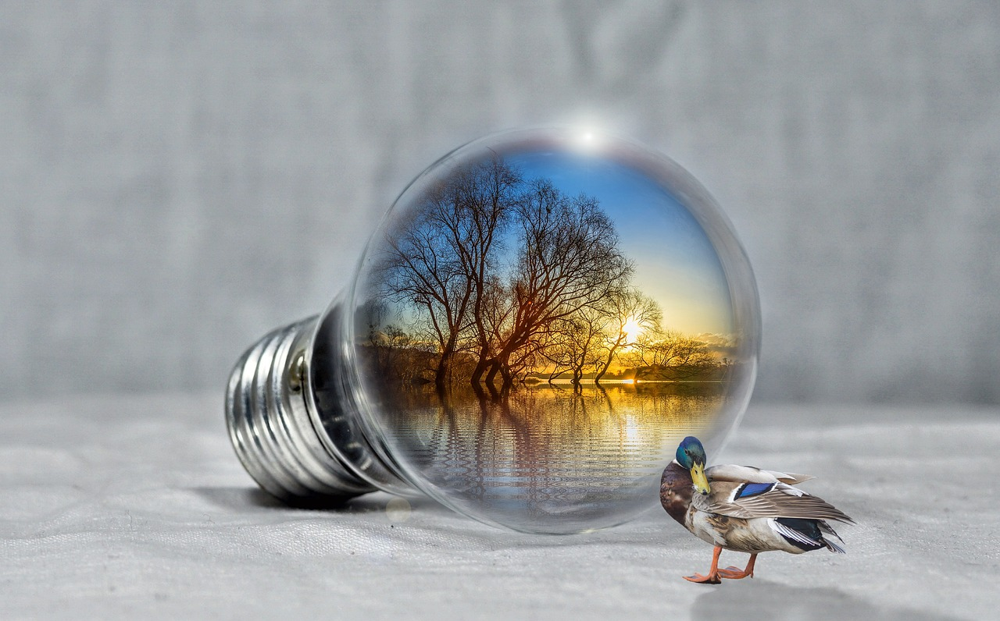

E N E R G Y
Optimize Your House!

Not every climate-conscious decision has to change your lifestyle. Why not do the same things with less waste?
Energy Efficiency Improvements
It’s always great to do more with less, and in the modern world, there are more opportunities than ever to adopt newer, cheaper, and more environmentally friendly technologies. Here’s a list of just a few of the many ways you can improve your house’s energy efficiency.
- LED/CFL Light Bulbs: These light bulbs are far more energy efficient than the traditional incandescent bulbs, since they convert electrical energy directly into photons of light instead of going from energy to heat to light like incandescents.
- Induction Stove Tops: Natural gas powered stove tops are extremely common throughout America, but they have many disadvantages to induction. Induction stove tops run solely off of electricity, and work by directly injecting heat into the cookware. This gives a far greater efficiency rating - about 85% - compared to gas stoves, which range from 32% to 80%. Additionally, there is no open flame, so induction stoves are much safer than gas burners. Finally, if a household transitions to electric room heating as well as stove heating, then there is no need to run natural gas lines into the house at all, which removes both a bill and a potential safety hazard. The primary downside of induction is cost, since replacing a full stovetop is expensive, along with needing to make sure your pots and pans are compatible with the technology, but in many cases the efficiency and safety is worth the upfront cost.
- Energy Star Appliances: Energy Star is a government-back organization formed by the Environmental Protection Agency which has information and tips for energy saving methods of all kinds. Appliances marked with their logo meet strict standards established by the EPA
- Smart Thermostats: HVAC (Heating, Ventilation, and Air Conditioning) systems are a massive energy drain on any household. There are many ways to reduce this drain, like the previously mentioned electric heaters instead of gas heaters, but one of the best ways to save energy on these systems is with a smart thermostat. These can automate your HVAC system in many ways and reduce how often it runs. For example, if there are certain times where the house is empty of people (like during the workday), you can program the house to heat or cool to a temperature that is much less extreme than your precise ideal temperature.
- Insulate Windows and Doors: This also relates to HVAC systems in that, if your doors or windows are leaking heat, then your HVAC system is going to be working much harder to keep the temperature to what you set it. Therefore, it’s a good idea to check your windows and doors for gusts of cold or hot air, and if you find any, either replace the entire unit or use an insulating seal around the unit to block the hole.
- Maintain Appliances: Getting dust in machinery slows it down and requires it to run harder and more often. This can apply to all sorts of appliances, including but not limited to refrigerators, washing machines, dryers, dishwashers, stoves, ovens, HVAC systems, and more. With most of these, cleaning only involves a vacuum cleaner and 15 minutes of your time, and can lead to much better performance and efficiency. For details specific to your appliances, you can check the manufacturer’s official maintenance recommendations online.
Of course, there are near limitless ways to optimize your life for efficiency. This page only talked about things you can do for your house, but there are plenty of other methods to make your life both healthier and more sustainable, like reducing your household’s food waste, riding bicycles or walking to places more